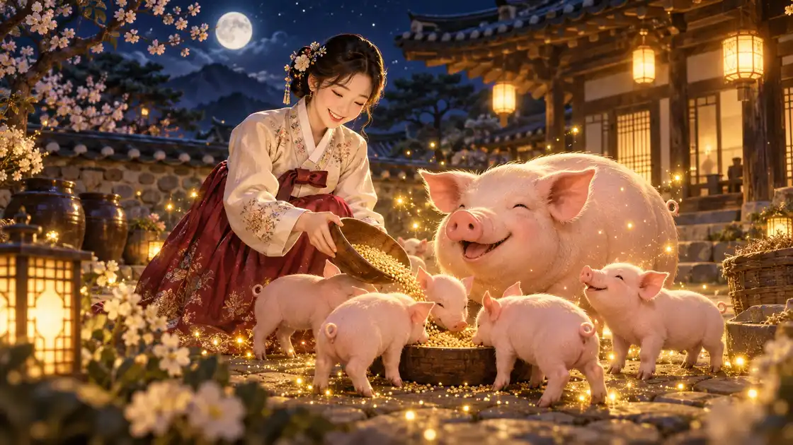

이 게시물은 쿠팡 파트너스 활동의 일환으로, 이에 따른 일정액의 수수료를 제공받습니다.
돼지 꿈 해몽 길몽

돼지 꿈은 예부터 재물과 복을 부르는 꿈으로 반겨 왔습니다. 돼지는 새끼를 많이 낳고 살이 오르는 동물이라 살림이 불어나고 집안이 넉넉해진다는 뜻으로 읽습니다. 돼지 '돈(豚)'이 돈과 소리가 같다는 말장난도 오래 전해 옵니다.
돼지가 나에게 다가오고 집 안으로 들어올수록 좋게 봅니다. 아래에서 내 꿈과 가까운 장면을 찾아보세요.
동네보살 한마디
돼지꿈은 예부터 재물꿈의 으뜸으로 꼽아 왔어요. 돼지가 집 안으로 들어오거나 품에 안기면 큰 복이 들어온다고 보고, 새끼를 여럿 거느린 어미 돼지면 살림이 불어난다고 읽어요. 돼지가 집 밖으로 달아나면 들어온 돈이 새지 않게 챙기라는 뜻이에요. 누런 돼지나 흰 돼지는 더 좋게 치고, 비쩍 마른 돼지는 기대를 조금 낮추라는 뜻이에요. 오늘은 지갑과 통장을 한번 정리해 두세요.
돼지 꿈, 장면별 풀이
돼지가 집에 들어오는 꿈
복과 재물이 집 안으로 들어온다는 가장 반가운 장면입니다. 집안 살림이 넉넉해지고 좋은 소식이 들어온다고 봅니다.
돼지를 안거나 쓰다듬는 꿈
들어온 복을 내 것으로 지킨다는 뜻입니다. 노력한 만큼 보상이 따른다고 풉니다.
새끼 돼지 여러 마리 꿈
작은 복이 여러 갈래로 들어온다는 뜻입니다. 부수입이나 여러 곳에서 좋은 소식이 오는 흐름으로 읽습니다.
황금 돼지 꿈
돼지 꿈 가운데 가장 큰 재물 꿈으로 봅니다. 오래 준비한 일에서 큰 결실을 기대해 볼 만합니다.
돼지가 집에서 나가는 꿈
들어온 복이 밖으로 새어 나간다는 뜻으로 읽기도 합니다. 지출을 한 번 정리해 보라는 신호로 받아들이면 좋습니다.
돼지에게 물리는 꿈
재물이 몸에 붙는다는 뜻으로 봅니다. 뜻밖의 수입을 기대해 볼 만한 꿈입니다.
돼지를 잡거나 사 오는 꿈
기회를 직접 붙잡아 재물로 만든다는 뜻입니다. 망설이던 일을 시작하기 좋은 때라는 신호로 읽습니다.
살찐 돼지가 우리에 가득한 꿈
쌓아 둔 노력이 넉넉한 결실로 돌아온다는 뜻입니다. 저축이나 오래 키운 일에서 좋은 소식을 기대해 볼 만합니다.
돼지에게 먹이를 주는 꿈
내 손으로 돼지에게 먹이를 주는 꿈은 정성 들여 키운 일이 넉넉한 결실로 돌아온다는 뜻으로 풉니다. 옛사람들이 돼지를 길러 살림을 불렸듯, 지금 꾸준히 하는 일을 이어 가면 좋다는 신호로 읽습니다.
돼지가 새끼를 낳는 꿈
돼지는 한 번에 여러 마리 새끼를 낳는 동물이라, 돼지가 새끼를 낳는 꿈은 한 가지 일에서 여러 열매가 맺힌다는 뜻으로 풉니다. 시작한 일이 생각보다 여러 갈래로 좋은 소식을 데려오는 때로 읽습니다.
돼지가 꿀꿀 소리를 내며 따라오는 꿈
돼지가 소리를 내며 나를 졸졸 따라오는 꿈은 복이 스스로 나를 찾아온다는 반가운 뜻으로 풉니다. 요즘 들어온 제안이나 부탁 가운데 반가운 기회가 섞여 있을 수 있으니 찬찬히 살펴보세요.
흰 돼지나 검은 돼지 꿈
빛깔이 고운 흰 돼지는 깨끗하게 들어오는 재물로, 윤기 나는 검은 돼지는 든든하게 쌓이는 살림으로 풉니다. 빛깔보다 돼지가 건강하고 통통했는지가 더 중요하다고 보시면 됩니다.
돼지 등에 올라타는 꿈
돼지 등에 올라타 함께 가는 꿈은 들어온 복을 타고 앞으로 나아간다는 뜻으로 읽습니다. 하고 싶던 일을 시작하기에 흐름이 좋은 때입니다.
돼지를 씻겨 주는 꿈
돼지를 깨끗이 씻겨 주는 꿈은 들어온 재물을 잘 다듬어 오래 지킨다는 뜻으로 풉니다. 통장이나 지갑을 한 번 정리해 두면 마음까지 개운해집니다.
돼지 저금통이 가득 찬 꿈
동전이 묵직하게 든 돼지 저금통 꿈은 작은 저축이 모여 든든한 목돈이 된다는 뜻으로 풉니다. 적은 돈이라도 꾸준히 모으는 습관을 시작하기 좋은 때입니다.
돼지가 마당에서 뛰어노는 꿈
돼지 여러 마리가 마당을 신나게 뛰어다니는 꿈은 집안에 웃음과 활기가 가득해진다는 뜻으로 풉니다. 가족이나 가까운 사람과 함께 즐길 일이 생기는 때이니, 미뤄 둔 나들이나 모임 약속을 잡아 보세요.
마음 쪽에서 보면
돼지 꿈은 넉넉하고 편안한 생활을 바라는 마음이 담겨 나타나기도 합니다. 기분 좋은 꿈이니 반갑게 받아들이고, 돈 관련 결정은 평소처럼 차분히 하시면 됩니다.
옛 해몽에서는
돼지는 우리 곁에서 오래 살아온 가축입니다. 한국민족문화대백과사전의 '돼지' 항목은 『삼국지』 위지 동이전의 기록을 들어 우리나라가 적어도 2,000년 전부터 돼지를 길렀다고 설명합니다. 부여에는 저가라는 벼슬 이름이 있었고, 조선시대에는 돼지 기르는 법을 다룬 옛 농서가 13종이나 전할 만큼 양돈이 번성했습니다. 같은 항목은 어미 돼지가 한 번에 여러 마리, 많게는 스무 마리 가까이 새끼를 낳는다고 전합니다. 살림을 불려 주고 새끼를 많이 낳는 돼지를 넉넉함의 상징으로 본 것도 자연스러운 일입니다.
돼지 꿈을 반가운 꿈으로 보는 풀이도 오래되었습니다. 백과사전의 '꿈' 항목에 실린 동물에 관한 민간 해몽에는 돼지를 보면 먹을 것이 생긴다는 풀이가 있습니다. 돼지 꿈을 먹을 것과 재물이 들어오는 꿈으로 읽는 오늘날의 해몽이 이런 옛 풀이에서 이어진 셈입니다.
같은 항목에는 돼지꿈에 얽힌 재미있는 옛이야기도 실려 있습니다. 어떤 사람이 돼지꿈을 세 번 꾸고 그때마다 해몽을 들었는데, 처음에는 먹을 것이, 두 번째에는 입을 것이 생긴다는 풀이가 나왔고 세 번째에는 매를 맞는다는 우스운 풀이가 나왔습니다. 세 풀이가 모두 맞자 해몽한 사람은 돼지가 꿀꿀거리면 먼저 먹이를 주고 다음에 짚을 넣어 준다는 이치로 풀었다고 답했습니다. 백과사전은 이 이야기가 웃음을 주는 이야기로 널리 알려졌다고 소개합니다. 같은 꿈도 그날의 형편에 맞춰 풀었다는 옛사람들의 여유가 담겨 있습니다.
연구로 보면
동물이 나오는 꿈이 왜 생기는지는 반려동물 꿈을 살핀 연구에서 실마리를 찾을 수 있습니다. 독일 만하임 중앙정신건강연구소의 슈레들(Schredl) 연구진은 2020년 학술지 Animals에 1,695명이 참여한 온라인 설문 결과를 냈습니다. 개를 키우거나 개와 함께 보내는 시간이 긴 사람일수록 개가 나오는 꿈을 더 자주 꾸었고, 그 꿈의 분위기도 밝은 편이었습니다. 연구진은 이것이 깨어 있을 때의 생활이 꿈으로 이어진다는 꿈의 연속성 가설과 맞는다고 보았습니다.
돼지를 직접 기르는 사람은 드물지만, 돼지는 옛이야기와 그림, 돼지 저금통과 새해 인사처럼 생활 곳곳에서 넉넉함을 뜻하는 모습으로 자주 만납니다. 연속성 가설로 보면 돼지 꿈은 돈과 살림, 넉넉한 생활을 바라는 마음이나 요즘 들은 반가운 이야기가 돼지의 모습을 빌려 나타난 것으로 읽을 수 있습니다.
다만 슈레들 연구진의 조사는 개 꿈을 다룬 것이고, 스스로 참여한 사람들의 설문이라 모든 사람에게 그대로 들어맞는다고 보기는 어렵습니다. 돼지 꿈만 따로 살핀 연구도 아직 찾기 어렵습니다. 그러니 돼지 꿈을 꾼 날에는 기분 좋게 받아들이되, 돈에 관한 큰 결정은 평소처럼 차분히 따져 보고 하시는 것이 가장 쓸모 있는 해몽입니다.
이 꿈을 꾼 날 해 볼 일
- 저축이나 적금 계획을 한 번 점검해 보세요.
- 미뤄 둔 정산이나 받을 돈을 정리해 보세요.
- 가족과 따뜻한 밥 한 끼를 함께해 보세요.
자주 묻는 질문
돼지 꿈은 길몽인가요?
네, 돼지 꿈은 재물과 복을 뜻하는 대표적인 길몽입니다.
돼지가 집에 들어오는 꿈은 무슨 뜻인가요?
복과 재물이 집 안으로 들어온다는 가장 반가운 장면으로 봅니다.
돼지 꿈이 태몽일 수도 있나요?
네, 돼지가 품에 안기거나 집에 들어오는 꿈은 태몽으로도 전해 옵니다. 자세한 풀이는 돼지 태몽에서 볼 수 있습니다.
돼지가 집에서 나가는 꿈은 어떤가요?
들어온 복이 새어 나간다는 뜻으로 읽어 지출을 정리해 보라는 신호로 받아들이면 좋습니다.
돼지 꿈을 세 번이나 꾸었어요. 더 좋은 꿈인가요?
옛이야기에도 돼지꿈을 세 번 꾼 사람이 매번 다른 풀이를 들었다는 이야기가 전해 옵니다. 여러 번 꾼 돼지 꿈은 넉넉한 생활을 바라는 마음이 크다는 뜻으로 보시고, 반갑게 받아들이시면 됩니다.
돼지에게 먹이를 주는 꿈은 어떤가요?
정성 들여 키운 일이 넉넉한 결실로 돌아온다는 뜻으로 풉니다. 지금 꾸준히 하는 일을 이어 가면 좋다는 신호로 받아들이세요.
돼지 꿈을 꾸면 왜 먹을 것이 생긴다고 하나요?
옛 민간 해몽에 돼지를 보면 먹을 것이 생긴다는 풀이가 전해 옵니다. 오래전부터 돼지를 길러 살림을 꾸렸기 때문에 돼지를 넉넉한 밥상과 살림의 상징으로 본 것입니다.
참고한 자료
함께 보는 꿈
해몽은 조상들이 꿈에 붙여 온 민간의 풀이입니다. 앞날을 정해 주지 않으니 좋은 꿈은 하루를 여는 기분으로, 언짢은 꿈은 한 번 더 조심하라는 신호 정도로 가볍게 받아들이세요. 같은 꿈이 오래 반복되거나 잠을 크게 설친다면 전문가와 상담해 보시길 권합니다.